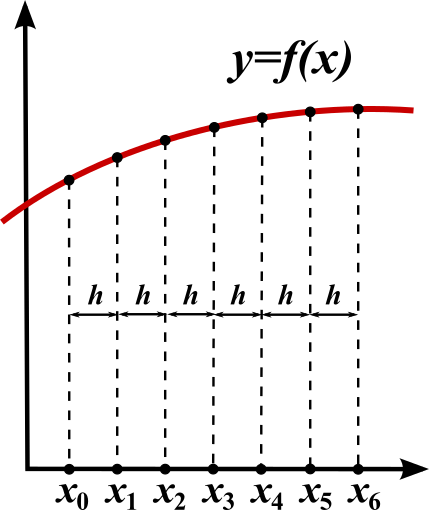
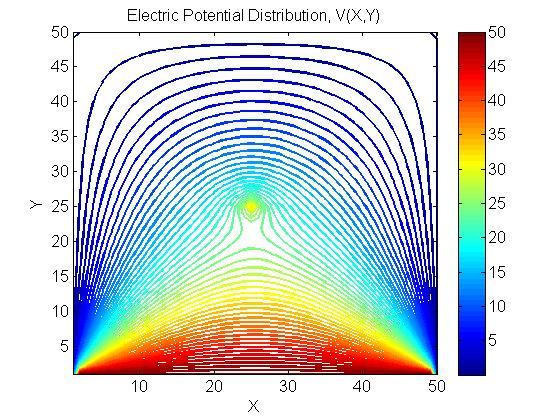
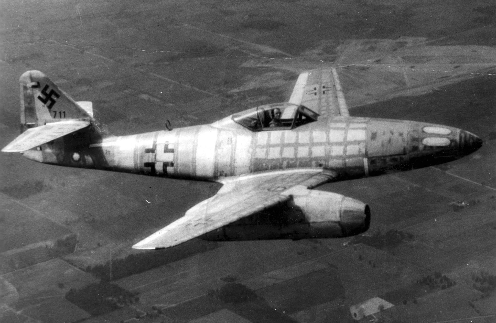
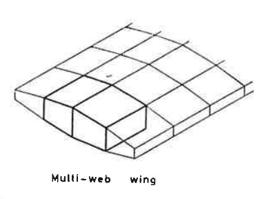
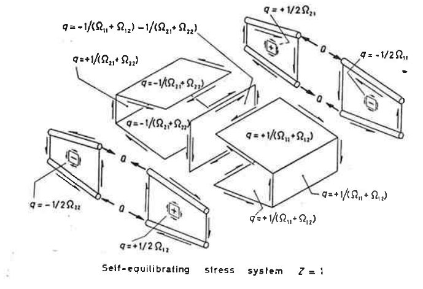
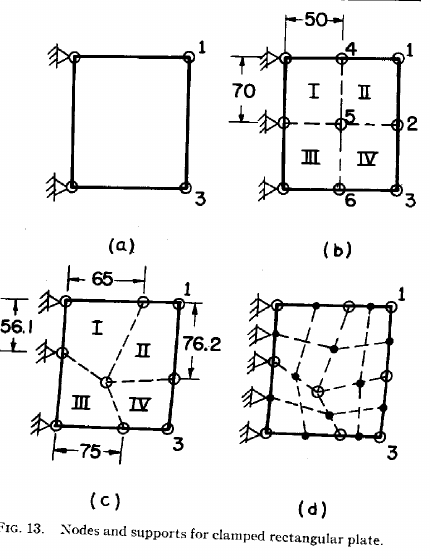
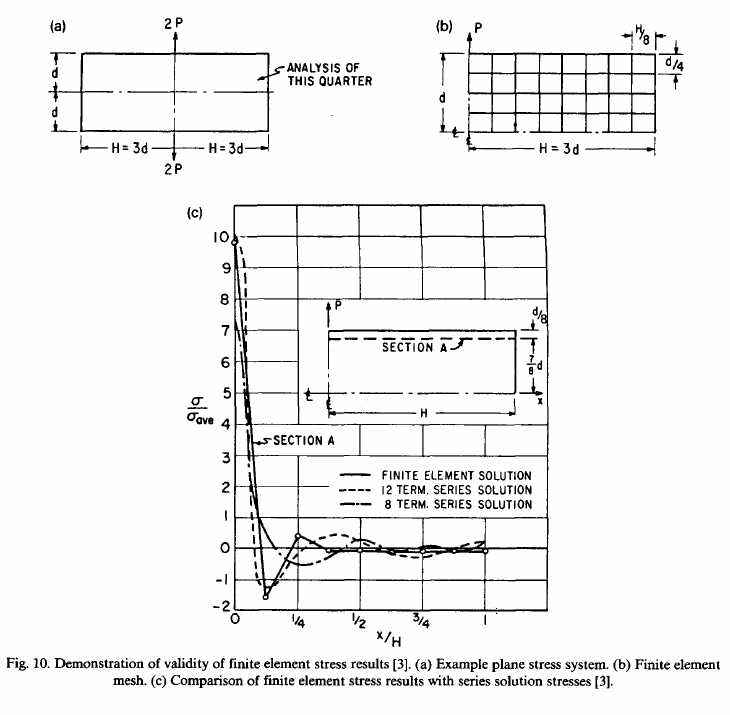
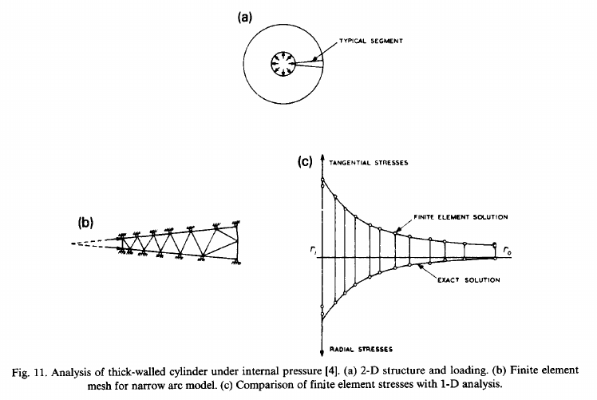
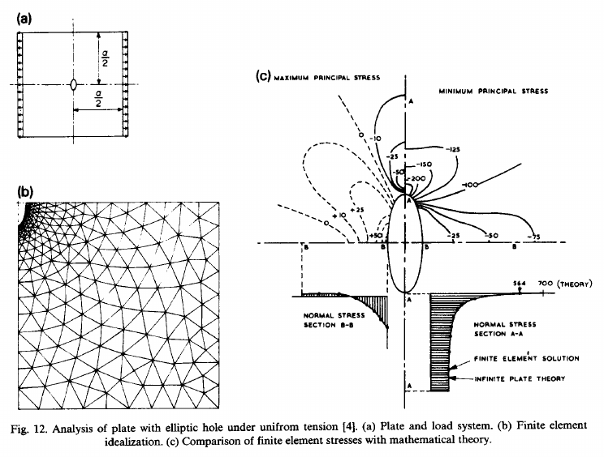
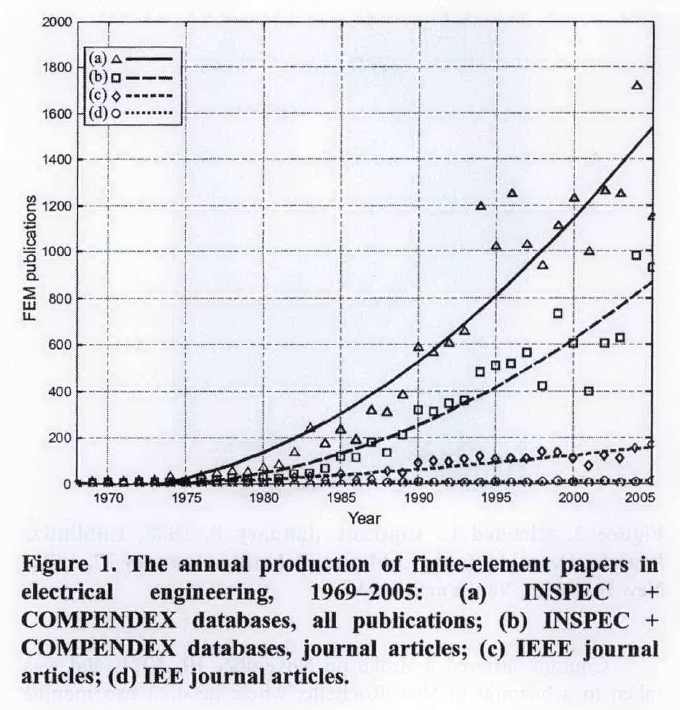

Una introducción a este método no podría estar completo sin una breve revisión a su historia. La historia del Método de los Elementos Finitos(MEF o FEM en inglés) es particularmente interesante porque su historia es relativamente reciente: el método existe apenas desde mediados de los años cincuenta.
Aunque el MEF fue desarrollado a partir de los años cincuenta el desarrollo matemático que lo sustenta fue establecido al inicio del siglo XX.
El desarrollo de los procedimientos del cálculo varacional fueron presentados por Rayleigh (1877) y Ritz (1909). Esta base teórica (referida como Rayleigh-Ritz) explica porque el método funciona. Sin embargo, este planteamiento está limitado a cierto tipo de problemas (difusión lineal) y no permite la solución de problemas con comportamientos diferentes (en particular problemas que tienen que ver con comportamiento de fluidos).
Unos años después, en 1915, Galerkin propuso un método a partir del método de los residuos ponderados que provee de una base teórica para un espectro mucho más amplio de problemas.
Estos desarrollos son fundamentales para el desarrollo de este curso ya que será precisamente la aplicación de estos métodos lo que será estudiado.
Los primeros trabajos en la solución numérica de problemas de elementos de frontera se pueden encontrar al uso del método de las diferencias finitas; Southwell (1946) discutió el uso de estos métodos en su libro publicado a mediados de los años cuarenta. El método de las diferencias finitas es un método en el que el dominio se divide por segmentos o áreas de la misma geometría y tamaño y, por lo tanto, está limitado a geometrías sencillas o regulares.
El inicio del MEF surge de esos métodos numéricos y la frustración de asociada a intentar utilizar el método de las diferencias finitas en problemas con geometrías irregulares y, por lo tanto más difíciles (Roache, 1972, 1998).


Iniciando a mediados de los años cincuenta los esfuerzos de resolver problemas continuos en elasticidad usando elementos discretos pequeños para describir el comportamiento global de barras elásticas simples comenzó a aparecer.
En este tiempo se empezaron a desarrollar estructuras celulares para crear alas de aviones. El análisis de estas estructuras no era sencillo utilizando los métodos analíticos tradicionales ni con diferencias finitas dada la complejidad de las geometrías.

Argyris (1954) y Turner et al. (1956) fueron los primeros en publicar el uso de dichas técnicas para la industria aeronáutica.



Hasta el año de 1960 en nombre elemento finito no existía y se encuentra por primera vez en un artículo escrito por Clough.
Los primeros usos que se le dio al método fueron en problemas relacionados con resistencia de materiales (análisis estructural). Sin embargo pronto fue reconocida la versatibilidad del método para problemas no estructurales.
Zienkiewicz y Cheung (1965) fueron de los primeros de aplicar el MEF a problemas de campos (ej. conducción de calor, flujo de fluidos, etc.) que involucraban las ecuaciones de Laplace y Poisson.



Buena parte del trabajo desarrollado para sistemas no lineales se puede encontrar en Oden (1972), mientras que los primeros esfuerzos de utilizarlo para problemas de transferencia de calor con fronteras complejas son discutidas por Huebner (1975); un modelo 3D para conducción de calor fue descrito por Heuser (1972). Las primeras aplicaciones del MEF para flujo de fluidos viscosos fue dado por Baker (1971).
Es importante enfatizar que el MEF sigue siendo activamente desarrollado y ampliado. En la próxima gráfica se muestra el número de publicaciones académicas que tienen como tema el uso de este método para ingeniería eléctrica desde 1970 hasta el 2005.
